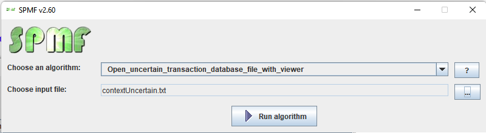
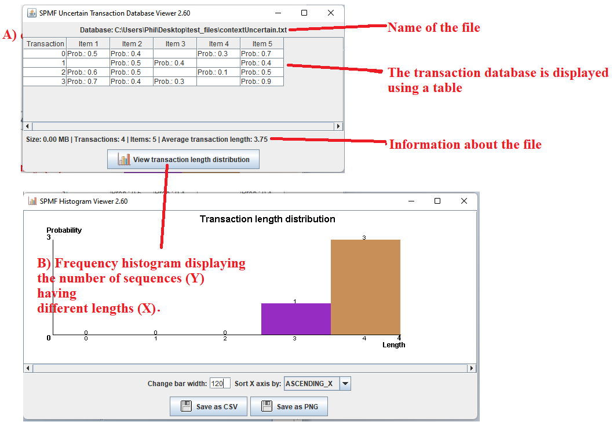

View an uncertain transaction database file with the transaction database Viewer (SPMF documentation)
Uncertain transaction databases are a type of data taken as input by data mining algorithms offered in SPMF such as UApriori .
SPMF offers a tool to view the content of an uncertain transaction database. This tool is called the SPMF uncertain transaction database Viewer.
This page explains how to use this tool with an example.
How to run this example?
If you want to run this example from the graphical interface of SPMF, (1) choose the algorithm "Open_uncertain_transaction_database_file_with_viewer", (2) choose the contextUncertain.txt file as input, and then (3) click "run algorithm" .

- If you want to run this example from the source code of SPMF, run the file MainTestUncertainTransactionViewer, which is located in the package ca.pfv.spmf.tests
- If you want to execute this example from the command line interface of SPMF, then execute this command:
java -jar spmf.jar run Open_uncertain_transaction_database_file_with_viewer contextUncertain.txt
in a folder containing spmf.jar and the file contextUncertain.txt which is included with SPMF.
What is displayed?
After running the example, the content of the file will be displayed by the tool. The picture below shows the user interface of this viewer.
The window A) show in the picture below is the main window. It displays the uncertain transaction database using a table. The table has four rows in this example. Each row is a transaction from the uncertain transaction database.
Take the first row as example.
The cell in the first column indicates that the ID of this transaction is 0.
The cell in the second column indicates that this transaction 0 contains the item 1 with a probability of 50%.
The cell in the third column indicates that this transaction 0 contains the item 2 with a probability of 40%.
The cell in the fourth column indicates that this transaction 0 does not contain the item 3.
The cell in the fifth column indicates that this transaction 0 contains the item 4 with a probability of 30 %.
The cell in the sixth column indicates that this transaction 0 contains the item 5 with a probability of 70%.
The other transactions follow the same format.
This view as a table can be useful to understand the content of an uncertain transaction database file.
Besides, there is a button that provides additional features:
- By clicking on the button "View transaction length distribution ", a new window is opened, presented as window B) in the picture below. This window displays the frequency histogram of the different transaction lengths in the current file. The number of transactions is the Y axis and the different transaction lengths are the X axis. There are some buttons in this window to export the data from the frequency histogram as a CSV file so that it can be imported in other software (e.g. Excel), or as a picture. Besides some options are provided to adjust the bar width and the order in which the X axis is sorted.

What is the input?
The algorithm takes as input an uncertain transaction database in SPMF format, as used by algorithm such UApriori.
The database used in this example is provided in the text file "contextUncertain.txt" in the package ca.pfv.spmf.tests of the SPMF distribution.
The input file format of UApriori is defined as follows. It is a text file. An item is represented by a positive integer. Each item is associated with a probability indicated as a double value between parenthesis. A transaction is a line in the text file. In each line (transaction), each item is immediately followed by its probability between parenthesis and a single space. It is assumed that all items within a same transaction (line) are sorted according to a total order (e.g. ascending order) and that no item can appear twice within the same line. Probabilities should be greater than 0 and not more than 1.
For example, this is the content of the example file "contextUncertain.txt":
@FILETYPE="Uncertain transaction database"
@SOURCE="SPMF SOFTWARE https://philippe-fournier-viger.com/spmf/"
1(0.5) 2(0.4) 4(0.3) 5(0.7)
2(0.5) 3(0.4) 5(0.4)
1(0.6) 2(0.5) 4(0.1) 5(0.5)
1(0.7) 2(0.4) 3(0.3) 5(0.9)
The first two lines are optional metadata. The first line indicate the type of file and the second line describes the source of the data. Then it is the data section.The first transaction represents the itemsets {1, 2, 4, 5} where items 1, 2, 4 and 5 respectively have the probabilities 0.5, 0.4, 0.3 and 0.7.